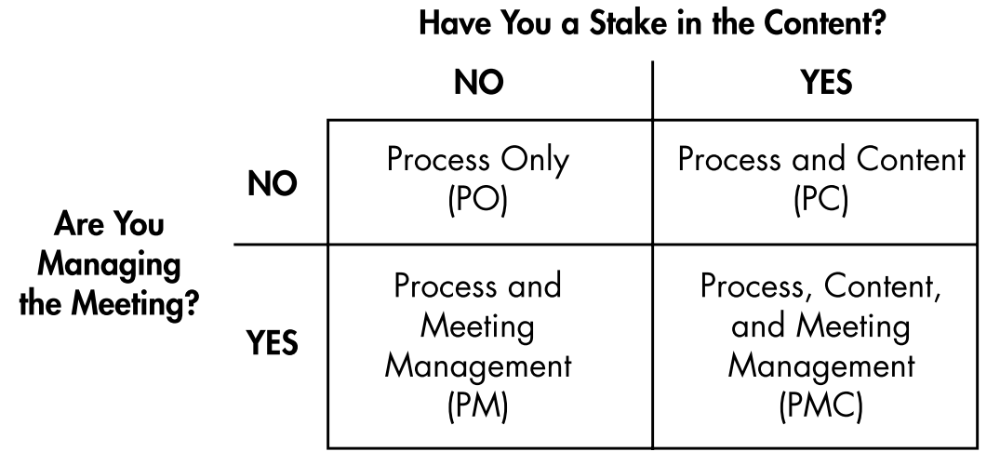
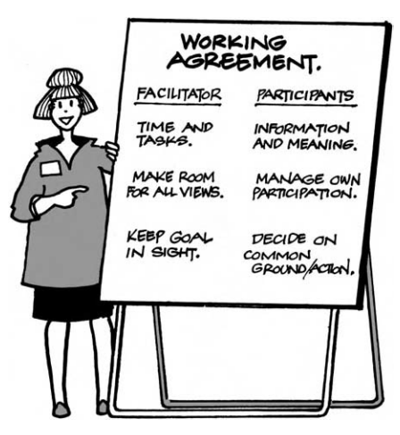
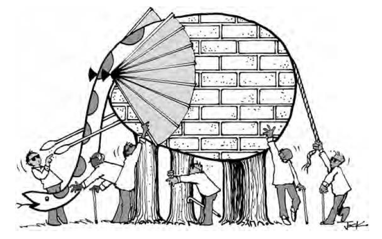
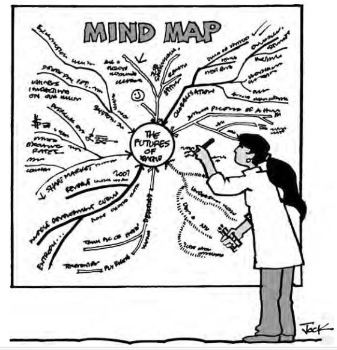
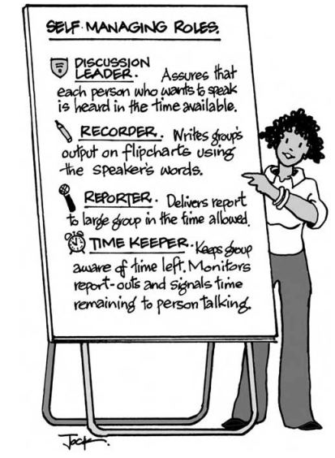
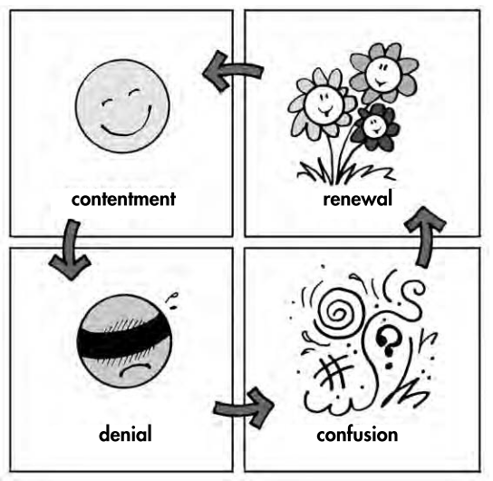
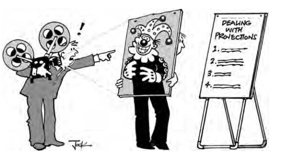

Don't Just Do Something, Stand There!
Ten principles for meetings that matter
DIFFERENTIATION/INTEGRATION THEORY
-
Help people differentiate their stakes without excluding anybody and integrate their goals without our forcing unity.
-
Our job as leaders/managers/facilitators is to set things up so that people can accept their differences and integrate their capabilities for the good of all.
Get the whole system in the meeting
Define a "whole system" as those who have among them authority, resources, expertise, information, and need. Get the right cross section if you want action on problems and decisions without a lot more meetings.
Define your system in relation to each meeting's purpose
a. Authority to act (e.g., decision-making responsibility in an organization or community);
b. Resources, such as contacts, time, or money;
c. Expertise in the issues to be considered;
d. Information about the topic that no others have; and
e. Need to be involved because they will be affected by the outcome and can speak to the consequences.
Give People Time to Express Themselves
When people have strong feelings about what is happening, they need time to come to grips with their feelings before they will "own" the needed action steps.
Manage Meetings Using D/I Principles
- Enable differentiation by asking people to speak individually or to work in groups where all share a functional similarity, each group clarifying their stakes. Simply asking people to form small groups is not what we mean here. If you organize random groups, with no basis in similarities, differences, or preferences, you are not "differentiating.". In our framework, we differentiate to integrate. Integration requires that people interact across boundaries of differences made explicit, seeking to build on all their resources and needs.
E.g.:
-
create differentiated perspectives
-
give interest groups a chance to clarify their positions
-
organize action groups differentiated by the tasks they undertake
<!-- -->
-
Help people integrate their diverse perspectives; we have people work in mixed groups that cover the spectrum of those present.
-
Ask small groups, whether functional or mixed, to report to the whole.
-
Talk over, question, or respond to what they hear from other groups
-
Control what you can let go what you can't
Let go of controlling: People's behavior, commitment, motivation, and outcomes.
Control: structure and your own behavior
Know your role

Process Only (PO)--- You have no management or content tasks. Your role is to observe and comment on how the group is doing.
Process and Meeting Management (PM)--- You may be employed to manage a meeting without responsibility for its content. Participants provide information, analysis, conclusions, decisions, and action plans. Future Search facilitators and internal consultants typically take this role. The responsibility is for structure rather than content. If you use a particular meeting model, you advocate explicit structures within which to frame goals, time required, room setups, and formal subgroups. However, the content comes entirely from participants.

Process and Content (PC)--- This is a typical role for experts hired, for example, to help a group plan a building, raise money, fix an environmental problem, or mount a public health campaign. In this case you have experience with solutions, interact with the group, and deliver your best advice. A person in authority runs the meeting, but you are on stage much of the time; and you will have great influence over goals, time frames, and agenda.
Process, Content, and Meeting Management (PMC)--- In this role, usually, but not always, you are a member of the group and may have formal authority, too. In short, you assume a great deal of responsibility for process, content, and, therefore, outcomes.
Clarify the Purpose---for Yourself
Every meeting has a purpose. Does the purpose make sense to you? What will the output be? Is it achievable in the time you have?
Why? What is required here? Information, decisions, solutions, action plans---any or all
At the start of every meeting check your understanding of the purpose against that of the participants.
Explore the whole elephant
Exploring the whole before acting on any part helps to contain anxiety about differences. If you tap into what every person knows before acting, people will act systemically without being told that they should. People learn that together they can do things none would have considered alone. We are thinking about what people see out there, what their world means to them, how they feel about it, and what they are doing now. We also are interested in what, if anything, they are willing to do. Enable everybody to talk about a world that includes all of their perceptions.
Everything is connected to everything else. The best way to find all the connections is to hear from people who have firsthand experience. Find out what every person has to contribute. In a short time, all participants will have a more realistic and complex view than any one person had at the start. Get everybody on the same page before asking them to problem-solve or decide. They will make better choices and be more likely to accept responsibility for action.

Apply a go-around
You can stop a meeting at any point where people bog down in ambiguity, conflict, or confusion, and ask to hear from every person, another way of saying to differentiate themselves.
The go-around can be used anywhere, anytime, for quickly getting a lot of information from each to all. You simply have every person willing to speak say something in turn about a topic. We usually start meetings with a go- around, asking people for their names, affiliations, and why they have come. By using this procedure, we validate every person's views, check expectations, and give all a sense of where others stand. We begin building a community where every person's presence is acknowledged.
Use Timelines

We use time lines to learn from the past, find patterns in the present, and discover implications for action. A time line consists of a strip of blank paper, vertical or horizontal, with key dates posted at intervals. In our version, we use long rolls of plain paper, 2 feet wide (0.61 meter), available in any stationery store. We cut strips from the roll (up to 24 feet or 7.32 meters) and put them on walls around a room. We label each strip with a topic (e.g., Health Care in X; Organization Y; Community Z) and add time frames at 5-year intervals. With small groups you can use shorter strips of paper.
Make a mind map
Mind mapping can be used for any purpose, from brainstorming to problem solving and decision making. It can be done in as little as 15 or 20 minutes, followed by as much conversation as you have time for. Larger groups may need 45 minutes. We use a sheet of paper 6 feet high and 12 feet long (about 2 by 4 meters) if there is enough wall space. In the center of the sheet we put the meeting topic and circle it. Then we have people brainstorm trends in society that affect their topic now. We define a trend as a direction of change, from more to less, from smaller to greater, and so forth.

Each new item is written on a new line coming off the circle or tied to an existing line. The person who names the trend indicates where it goes on the map. All trends are valid---that is, legitimate to put on the map. We ask for concrete examples so that every person will know what the speaker is thinking. If somebody says, "Health care is getting worse," we ask for an example. "I had to wait 4 hours with my child in the emergency room last week." Somebody else may say, "I think health care is getting better. I had a heart bypass that saved my life." Both statements are legitimate, and both go on the map. The purpose of this activity is to develop a view of the world that includes all perceptions. All conversations that follow will be in relation to the same world---the one that includes every trend on the map.
Draw a flowchart
Let people be responsible
Leading meetings in a way that encourages participants to share responsibility.
Accept That Everybody Is Doing the Best They Can
People only do what they are ready, willing, and able to do. That is all you have to work with.
Let People Hide Their Hidden Agendas
Let hidden agendas stay buried if that's where people want them. We do not ask people what they are not saying. If people wish to conceal their "real" feelings or "real" data that is a choice they must live with. Their choice is, for us, the real data. In our philosophy, people have a right to hold back.
Do Less So That Others Will Do More
If you want others to take responsibility, we urge you to try doing less than you are used to doing. Nature hates a vacuum. When you step back, others come forward. The more you busy yourself---explaining, rationalizing, interpreting, justifying---the less room there is for other people. They will sit back, watch you work, and evaluate your style.
Encourage Self-Management

You can encourage people to share responsibility for a meeting and its outcomes if you don't take the entire burden on yourself. One way to free yourself is to give up trying to diagnose individuals and groups, a task that grows more difficult the more diverse the group. Instead, learn to work with people the way they are. Make structure the focus of your attention rather than individual behavior.
Do less so that others do more. In the next meeting where something unexpected happens, just stand there. Pause. Notice your thoughts. Notice what your body wants to do. Then look around and make eye contact with as many people as you can. Find a person who wants to talk and nod in their direction.
Find common ground
We define "common ground" as those statements every person will agree with after all views have been heard and disagreements made public. The major benefit of finding common ground is increased cooperation and fast action on matters of shared concern. When some people agree and others don't, treat that as a reality to live with, not a problem to be solved.
Advantages:
-
Ambiguity and uncertainty are reduced knowing where there is full agreement and where there isn't
-
Energy can go toward implementation instead of convincing those who do not agree
-
People are more inclined to accept responsibility when they know where everybody stands
-
Action is likely to be swifter
-
People are pleasantly surprised when they discover how much agreement exists.
Hold Off Problem Solving
Save problem solving until all can talk about the same world. Everyone likes to have their problems heard, and one way to find out who shares them is to say them out loud. But rushing to solve problems too quickly diverts people from discovering what aspirations they hold. People may endorse solutions to move the meeting along and not follow through.
Get Conflicts into the Open, and Leave Them There
Focus on the Future
When a meeting calls for future scenarios, we ask people to put themselves X years in the future and imagine their dreams as if they have been realized; describe structures, policies, and relationships in the present tense; and look back on the single most important step they had to take X years earlier to get started.
After common ground has been established:
Option 1 work in small groups:
Have people work alone or in small groups to write down what they think every person in the room would agree to. Then have each person or group post its statements on the wall. Ask people to cluster similar items together. Then have volunteers read each cluster aloud. Ask for questions for clarification. If a person challenges the wording, ask the original writer what was meant. If all agree to small modifications, have a volunteer write a new statement. If, after a few minutes of dialogue, people cannot agree, move the item to a "not agreed" list.
Option 2 work with the whole group:
Have people call out what they think everybody wants while volunteers write the items on flipcharts. (You can ask people to make notes alone first, if you wish.) Typical instruction: "Based on our conversations so far, what do you believe would be agreed to by every person in this room?" Then continue with reading and discussing each item in turn, as described earlier.
Option 3 Line-up Small-Group Easels (No Posting Required):
Have small groups each make a single flipchart of items they think all would agree to. Line the charts up in the front of the room. Have one person stand beside each chart. Ask the first person to read each item in turn from the chart he or she is monitoring. Ask the other monitors to cross off any duplicates they have. Do the same with each monitor in turn. When you get down to an unduplicated list, continue with a dialogue as noted before.
What to Do with "Not Agreed" Items. Inevitably, there will be one or more items on the "not agreed" list. We always have these read aloud, too. We suggest you ask people if they understand the nature of their disagreements. Talk for a few minutes until they do. We are not looking for resolution, just clarity on the differences. If appropriate, ask people how they want to handle these items. At the very least document them. We are conscious that there are no perfect processes, and you can't tie up every loose end.
Depersonalize Conflict
To depersonalize conflict is to reassure the parties that they need their unique orientations to do their best. Task conflict is more manageable than interpersonal hassles. Watch people relax when you tell them the strong feelings they have about their work are legitimate. Of course different goals lead to divergent expectations. Of course people with different deadlines march to different drummers.
Master the art of sub-grouping
Functional subgrouping is the practice of inviting people to ally with others based on similar experiences, feelings, or points of view. Groups will keep working so long as no member becomes a victim of stereotyping. The way to head off fight or flight is to help people experience their differences as functional rather than stereotypical. We do this by invoking subgroups if scapegoating or splitting seems probable. In conflict situations, you can go further and form temporary subgroups in which people explore their positions. Most of the time they will resolve and move on when they discover a legitimate spectrum of views, making confrontation unnecessary.
As you apply the theory outlined here to meetings, you will discover a wholly new way of keeping groups on task regardless of their differences. As you learn to do this, you will free yourself from needing to fix every problem that comes up.
Getting people to differentiate themselves---to heighten their awareness of their differences---holds the key to integrated problem solving and decision making.
No matter what formal structures you use, group members from the first moment will be drawn into invisible subgroups. Because people keep most projections secret, even those meetings that seem smooth and orderly become a jumble of unspoken wishes, energies, and frustrated impulses. Somebody forms a judgment and be- comes part of a subgroup that includes every other person with similar thoughts. Of course, no one knows it unless you take the trouble to poll the group. There is at work an informal system functioning apart from the people in it.
On the surface, you have people doing what they do in meetings. Underneath, each person is aligning with, distancing from, or ignoring every statement made. Each audible remark becomes a focal point for new, invisible subgroups forming and re-forming from moment to moment.
With a few well-chosen words, you can change a stereotypical subgroup into its functional equivalent. We use the adjective functional here to suggest "contributing to growth," not to describe people's jobs. Functional subgroups transcend the stereotypical subgroups that people form and re-form in their heads.
So long as every person has a functional ally--- somebody who carries the same ideas and/or feelings---a group is more likely to keep working. Members will not distract themselves with side trips into rejecting, rescuing, or scapegoating those who take risks. Our minimal job becomes helping people experience functional differences when stereotypes might prevail. If we do this job right, group members will take care of the rest.
When we lead meetings, we just stand there so long as people stay with the task. Even when we seem relatively quiet on the outside, just standing there for us involves actively observing potential subgroups and their impact on the work.
When people say or do something that visibly heightens the tension, when we hear the crackle of fragmentation and splitting, fight or flight, we go on high alert. Those are the moments when we must be ready to act. Here we de- scribe four key techniques that make up the core of our meeting management.
Technique 1: Ask an "Anyone Else" Question
This practice is stunningly simple. Act when you hear people make statements so emotionally charged that they put themselves at risk of being isolated or labeled. We judge the impact of such statements by the extent to which tension rises in the group.
PARTICIPANT: We have been at this for 2 hours, and I'm frustrated that we haven't made more progress!
Try to build an informal subgroup for the person that made a statement. For many people, this will be counterintuitive. Rather than look for somebody who is not frustrated to counterbalance the person that made the statement, your best move is to get the person that made the statement joined by people that share the same opinion.
LEADER: Anyone else feeling frustrated?
We expect one or more people to raise their hands. When they do, we ask for their experience. Usually we discover they have a spectrum of frustrations. Speakers see that they are not alone. Frustration is OK. Confrontation is avoided. Everyone has new information on where others stand. The group moves on. Sometimes, however, people ignore the frustrated per- son, moving on to other topics, leaving emotionality hanging like fog in the air.
LEADER (recognizing the unfinished feelings): I want to go back to what _____ said a minute ago. Is anyone else feeling frustrated?
LEADER (to those nodding): What do you experience?
One person gives his or her version. Perhaps another chimes in. At this point the group is working again. What might have been a fight becomes a dialogue on a key issue---the degree to which the work frustrates people. This is not a denial of the reality of the person who brought up the issue.
Rules for asking "Anyone else"
-
Listen for the intensity of feeling, and note what happens in the group. Many statements require no response. The person making them is satisfied to get it out, and people accept the comment as part of the dialogue.
-
Cite the content of a statement only when the content does not threaten a personal attack or a divisive argument.
Note that we can't anticipate functional subgroups. We discover them as the meeting progresses. It takes only one ally to form a subgroup, validate a person's right to an opinion, and keep the meeting on track.
In managing meetings, we need to emphasize, we are not standing there saying "anyone else" every few minutes. Even in meetings lasting 2 or 3 days, we rarely ask this question more than once or twice. We attribute this to the fact that we seek from the start to validate every person's experience. I
Suppose Nobody Joins? In our learning workshops, somebody inevitably asks, "Suppose nobody joins?" Well, we have been there, too. Once in a great while---maybe every year or two---one of us will ask an "anyone else" question and be greeted by silence.
PARTICIPANT: This has been a big waste of time for me.
LEADER: Anyone else feel they are wasting their time?
Nobody says a word.
In that case, we see whether we can authentically join the person who has gone out on a limb. We may wait as long as 20 seconds after asking, "Anyone else?" which seems like an eon longer than eternity. When nobody speaks, tension builds while we consult our experience for an honest response.
LEADER: I've had moments here when I thought I was wasting my time, too.
Suppose we can't authentically join. The meeting has been great from our point of view.
LEADER: It seems you're the only one at this moment. Are you able to move on?
Technique 2: Use Subgroup Dialogue to Interrupt Polarization
Now and then people become deeply polarized over conflicting beliefs, problem definitions, solutions, or decisions. In such cases, people may strongly disagree without stereotyping each other, but their conflict threatens to derail the task. There is a second technique we use for instances that paralyze a group. Our objective is to have people explore both sides of the conflict, but not in the way you might imagine.
Instead of encouraging a dialogue between polarized subgroups, we stop the action and have people in Sub- group A identify themselves. We do the same with Subgroup B. Then, we encourage the A's to talk with each other while the B's listen. After all the A's have had their say, we ask Subgroup B to do the same while Subgroup A listens.
The reason for this may not seem obvious. When people dialogue with those who are ostensibly similar, comparing notes on what they believe and why, they nearly always discover differences that were not apparent at first. There is a spectrum of views within Subgroup A (just as members of a political party vote the same way for different reasons). Often this comes as a surprise to both Sub-groups A and B. Moreover, when people listen in on conversations among those they consider different, they nearly always discover positions similar to theirs that they could not discern until now.
In short, we affirm Yvonne Agazarian's principle that within apparent similarities, differences always exist, and within apparent differences, similarities will emerge. As people make these finer distinctions, they develop a more grounded sense of what they consider relevant. They experience a continuum of opinions rather than two opposite poles. They suspend for the time being their stereotypes and projections and get on with the business at hand. Differentiation leads to integration. Both/and replaces either/or as the unspoken group assumption.
Technique 3: Listen for the Integrating Statement
How do you know when a group is ready to take a next step? One clue is when people start recycling earlier statements. This usually indicates that a spectrum of views is now on the table. No one has more to add. An even more reliable sign that a group has all it needs to move on is what we call an "integrating statement." Polarized groups often get stuck in tense "either/or" conversations. An integrating statement takes the form of a "both/and" comment, recognizing that each side of a polarity has validity. When we wait long enough for a dialogue to run its course, a group member will nearly always volunteer such a statement.
Fortunately, we find many natural integrators in groups. Suppose no one comes forward? Well, in a pinch, we can always state the obvious. "We hear two points of view, A and B. What would you like to do with these?" When all else fails, we consult group members on what they want to do.
Technique 4: Get Everybody to Differentiate Their Positions
We never run an interactive meeting without giving everyone a chance to comment on what they do, why they came, what they want, and/or what they know. In groups of up to 50 or 60, we nearly always start with a go-around. We might ask people for their name, role, and interest, for their expectations, or for their understanding of the goal.
We use the go-around any time we feel stuck and need to break an apparent logjam. We simply stop the action and say, "We'd like to hear one sentence from every person who wants to speak. How do you feel (or think) about situation _____? Then we will decide what to do." Nearly a ways this act of differentiation produces information that gives all of us choices not obvious a few minutes earlier.
Make friends with anxiety
Learn to accept anxiety as an inevitable traveling companion when the stakes are high, issues complicated, perceptions diverse, and answers uncertain. You can grow your capacity for leadership by increasing your tolerance for such natural conditions as disorder, ambiguity, and uncertainty.
You can grow your capability for leadership many fold by increasing your tolerance for disorder, ambiguity, and tension. Often you do not need to know why you are anxious, only that you are. When a meeting falls into confusion, the urge to retreat or fix it immediately can be irresistible. Don't panic. You will help yourself immeasurably by hanging in despite your queasy feelings. If you wait just a while longer, you can help people find greater clarity and move in new directions.
1. Visit the "Four Rooms of Change"

For example, in Contentment (we tell the group), we're happy with the status quo and don't need to change anything. However, stuff happens. When struck by turbulent circumstances, such as information we'd rather not have, Denial is a normal retreat, a room to pass through but not live in. (If you confront people in Denial, they will deny it.) When we acknowledge that we don't like where we are, we move ourselves into Confusion. This is the room of uncertainty and high anxiety. It is also the room of possibility, for we now are looking full-time for a way out. As we confront the mess and confusion, we begin to see patterns not visible before. As we move toward creative solutions, we find ourselves in the Renewal Room. We point out that people in this meeting could live in any room at any moment. We have known groups to move quickly from room to room as they deal with a sea of information. We also are not surprised that groups spend time in Denial and Confusion before moving into Renewal and Contentment. Nor are we shocked when, on rare occasions, people freeze in place for what seems like an eternity. We tell people we are not predicting what they will do or requiring that they do anything. We're describing what could happen. We know that people would prefer that we, as leaders, keep everybody in Contentment or Renewal. Alas, we say, we don't know how to do that! We accept all the rooms as possibilities when you do purposeful work. We end our briefing with the hope that group members will do the same. Over the years, we have repeatedly heard people refer to the four rooms during a meeting, making legitimate their feelings, especially when things get rough. This structure makes things easier for everybody and helps us keep ourselves centered.
Nobody likes Confusion, but in the middle of a tense meeting Confusion is not a bad place to be. Why would we con- sider it functional to live in a space no one likes? A physical/emotional state that some people take drugs to relieve? Well, we are not talking about clinical anxiety, that unfocused, nameless dread that overcomes many of us now and then and a few of us all of the time. We are talking about commonplace anxious meetings in a diverse world of non- stop change, when people wonder whether they will agree on a goal, be heard, solve the problem, make the decision, fashion the plan, cooperate, learn, and still make it home for dinner. In short, the Confusion Room has many doors. One leads back to Denial. The others welcome you to Renewal. Anxiety represents energy looking for a constructive outlet.
Manage anxiety
Use the Four Rooms of Change in Meetings
Just Stand There and . . . Breathe
-
Just stand there. Contain your feelings.
-
Be aware of your agitation, your fear that things are getting out of hand, your impulse to fix it fast.
-
Wait. Look around.
-
Exhale as much air as you can.
-
Take a big, deep breath.
-
Hold it a few seconds.
-
Repeat as needed, until somebody says what needs saying.
Check Your Negative Predictions
First, check your own thoughts. Are you making a negative prediction? If yes, pull yourself back by thinking, "It hasn't happened yet." Group members may have similar apprehensions. You have the advantage of knowing that if you wait, stay engaged, and keep alert, the situation will clarify.
Track Your Inner Dialogue
To follow our own streams of consciousness while leading meetings is to explore an underground river so vast it is a wonder how we navigate it. Consider it normal. Contain your anxiety. Recognize it, accept it, and consider it part of your job. Are you reacting to something in the room, or just what's in your head? Give yourself a reality check. Stay open to possibilities.
Experiment with Silence
We keep the door open by listening without acting. We are mindful that each time we break the silence, we deprive someone of a chance to make a valuable observation. If we treat silence as a problem to be solved, we deprive others of a chance to take care of themselves. Just waiting often is all a group needs from us to shift toward active dialogue, reality checking, and creative collaboration.
Get people moving
Nothing relieves anxiety better than physical movement. When people want to run from the task, that's the perfect time to invite them to get up---and keep working. In large- group meetings, we look for opportunities to let people move. It is natural for people to move when breaking into small groups. We ask people to post their own flipcharts. We solicit their help in taking notes, leading conversations, summarizing what they hear. It is natural for people to move if they need a break. We suggest that people who need a break take it at any time.
- State the obvious
Here are some phrases we have used over the years:
-
"There are many opinions on this. Do we have them all?"
-
"We've spent a long time on this topic. Is there more to say, or can we move on?"
-
"I don't know about you, but I'm ready for a break."
-
"Clearly, this issue stirs up strong feelings."
-
"I'm confused about how this conversation relates to our purpose."
-
"At this moment I haven't the foggiest idea what to do."
Anytime you state the obvious, wait 5 or 10 seconds for a reaction.
-
Consult the Group
-
Grow Yourself by Listening to What You'd Rather Not Hear
In each meeting, we seek to stretch our capacity for tolerating statements we don't believe, ideas we oppose, and interaction styles that make us cringe. We stay aware of our internal tug of war between our own and others' concepts of right and wrong, truth and falsity, valid information, and what ordinary words mean. As we experience our potential for negative predictions, mind reading, stereotyping, mistrust, and anxiety, we find it easier to accept that this is where groups usually start.
The more we learn to hear all views without reacting, the more a group is likely to express all sides of polarized issues. We train ourselves to listen for the parts of each statement with which we agree. We counteract our tendency to make a case (inside our heads, of course) for the parts we oppose. To the extent we act congruent with our philosophy that all statements contain value, the easier we make it for task groups to do the same.
-
Know Why You Are There
-
Process is more important than content.
-
Don't get distracted with last-minute panic attacks.
-
Repeat the goals.
-
Repeat the ground rules.
-
You're really not in control of anything.
-
Get used to projections
Projection means experiencing as originating "out there" parts of ourselves that we like or reject. We may project our hopes and fears on others, making them responsible for our feelings and our fate. Others do the same to us, especially when we take leadership. There are many benefits to becoming aware of your projections. Not least of these is learning to detach enough from what happens in meetings that you stop taking personally whatever people say or do.
When you are leading a meeting, do you get agitated with people who say nothing? Or with those who won't shut up? If someone expresses anger, do you become angry? Do you sometimes suspect that people are telling you what you want to hear? Or silently judging you on criteria never made explicit? Do you sometimes decide this group is "resistant," another group "ready to work"? Have you ever found yourself disliking, mistrusting, or ignoring somebody before you knew anything about that person? Or found yourself liking a complete stranger at first sight? In each of these scenarios, you are caught up in the experience of projection. You attribute to things and people "out there" qualities that originate in you. Whether they have any basis in fact is irrelevant when you are projecting.

Now comes the tricky part. To keep your projections from leading you to act unskillfully, own as many of them as you can. By "owning," we mean experiencing yourself with awareness, accepting traits that you don't like along with the ones that you do. The payoffs are many if you take the time:
-
You will be less likely to reject or idealize others.
-
You become less judgmental.
-
You free yourself from having to be perfect.
-
You contain anxiety when people say things you'd rather not hear.
-
You experience fewer threats to your ego.
-
You increase the range of people you can work with and not act out inappropriate feelings.
-
You may learn at long last how to live that facile advice, "Don't take it personally!"
From the Weirs we learned how we turn the evidence of our senses into stories we create to satisfy whatever worldviews we have internalized. Our senses provide the factual information. Our brains turn sensory evidence (sights, sounds, smells, etc.) into personal perceptions ("percepts"), each one of which is unique. Every external stimulus sends an instant message to the brain, which compares the new sensation with those stored in memory. Our brains then form an image to reinterpret the experience in a way that satisfies us. Every experience we have from "out there" we turn into a percept "in here." We tell ourselves a story and act as if it is true.
1. You choose your own judgments, fears, and fantasies. Nobody does anything to you. You "do" your- self. You may be tempted, for example, to imagine some group members are "undermining" your agenda. In the world of percept, you undermine yourself with the group-in-you.
2. You are unlikely to convince others that their truths are wrong and yours right. Hear others' statements of "fact," "truth," and "reality" as percept parts-of- them (the them-in-you!).
3. Reduce any tendency you may have to blame others for what you do or feel.
Be a dependable authority
Anytime you assume authority, people test your depend- ability. The more emotional the agenda, the tougher the testing. Being dependable means staying cognizant of a authority dynamics as they play out in every group. You can- not avoid authority projections. They come at you anytime you lead. You can learn to keep your head and not take things personally. You can respond appropriately to dependency and counter-dependency without becoming hooked on your own brilliance or undermined by your suspected shortcomings.
Learn to say no if you want yes to mean something
Saying no is an underused skill in a shorter-faster-cheaper society. If you say no to conditions where you are not likely to succeed, you will save yourself and others much time and effort in meetings. If you prepare yourself to say no, you will feel more secure, successful, and centered each time you say yes.